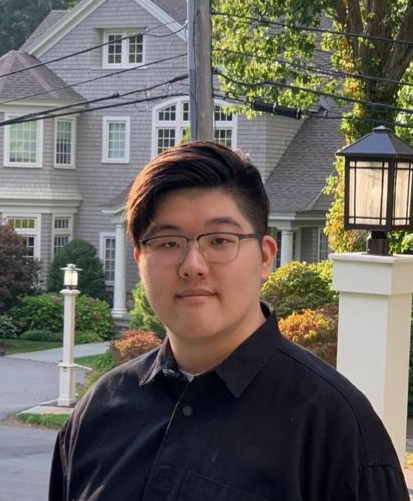
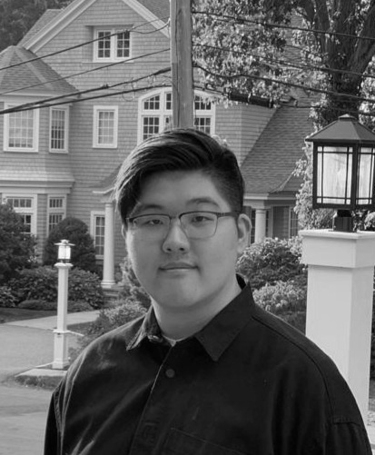
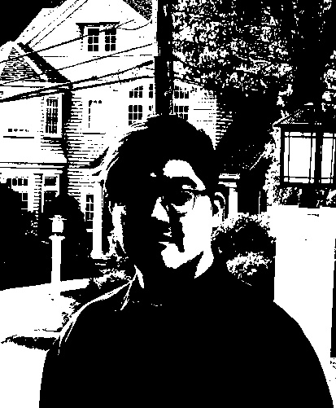

Hin Lui Shum

This is the original image of my face

This is the grayscale image of myself by taking the average of RGB from original picture

This is the black and white binary image of myself by thresholding the grayscale image
For pixel with RGB value > 127,127,127, they will be set to 255,255,255 white
For pixel otherwise would be set to 0,0,0 black to create the binary image.